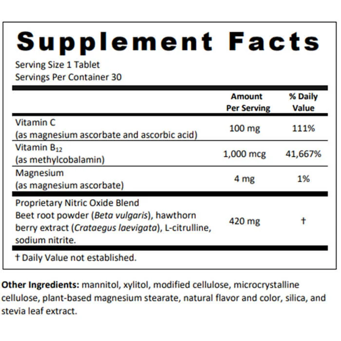
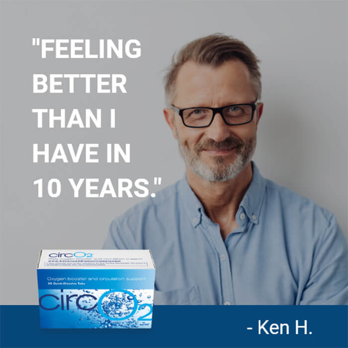
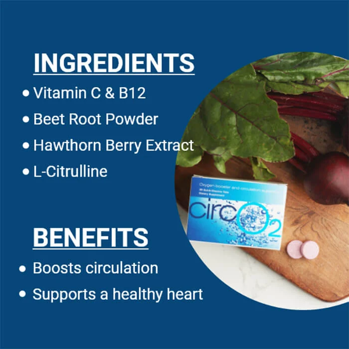

About CircO2
CircO2 is a dietary supplement marketed for nitric oxide support. Its formula includes a combination of selected ingredients. Review the official product label and directions before deciding whether it is right for you.
Product Gallery
Take a closer look at the product.




Product Features
Nitric Oxide Support
Marketed as a supplement designed to support the body's nitric oxide production.
Multiple Ingredients
Combines ingredients such as beetroot and L-Citrulline.
Product Information
Review the official label, serving size and directions before use.
Key Ingredients
Ingredients listed for the product include:
- Beetroot
- L-Citrulline
- Hawthorn Berry
- Vitamin B12
- Vitamin C
- Magnesium
Check the official product label for exact amounts and the complete ingredient list.
Things to Consider Before Buying
Before purchasing any dietary supplement, read its label and consider whether its ingredients are suitable for you. If you take medication or have a medical condition, consult a qualified healthcare professional before use.
Explore CircO2 on the Official Website
Visit the official website to review current product details, ingredients, pricing and available offers.
CHECK OFFICIAL OFFERFrequently Asked Questions
What is CircO2?
CircO2 is a dietary supplement marketed for nitric oxide support.
What ingredients does it contain?
Listed ingredients include beetroot, L-Citrulline, Hawthorn Berry, vitamins B12 and C, and magnesium. Check the official label for the complete formula.
Where can I check the price?
Visit the official website using the offer link above to see current pricing and offers.
Health Disclaimer: This page is for informational purposes only and is not medical advice. This product is not intended to diagnose, treat, cure or prevent any disease. Consult a healthcare professional before using dietary supplements.